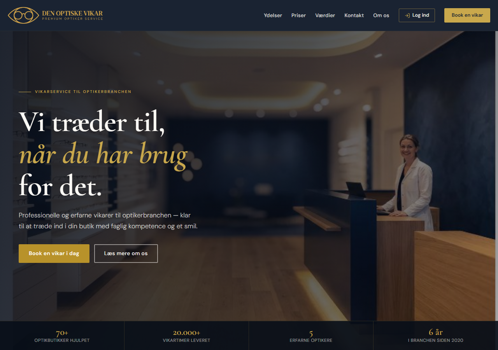
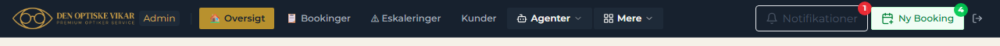
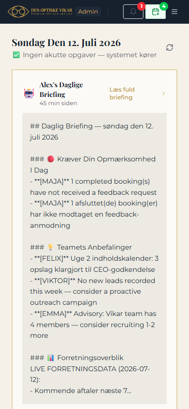
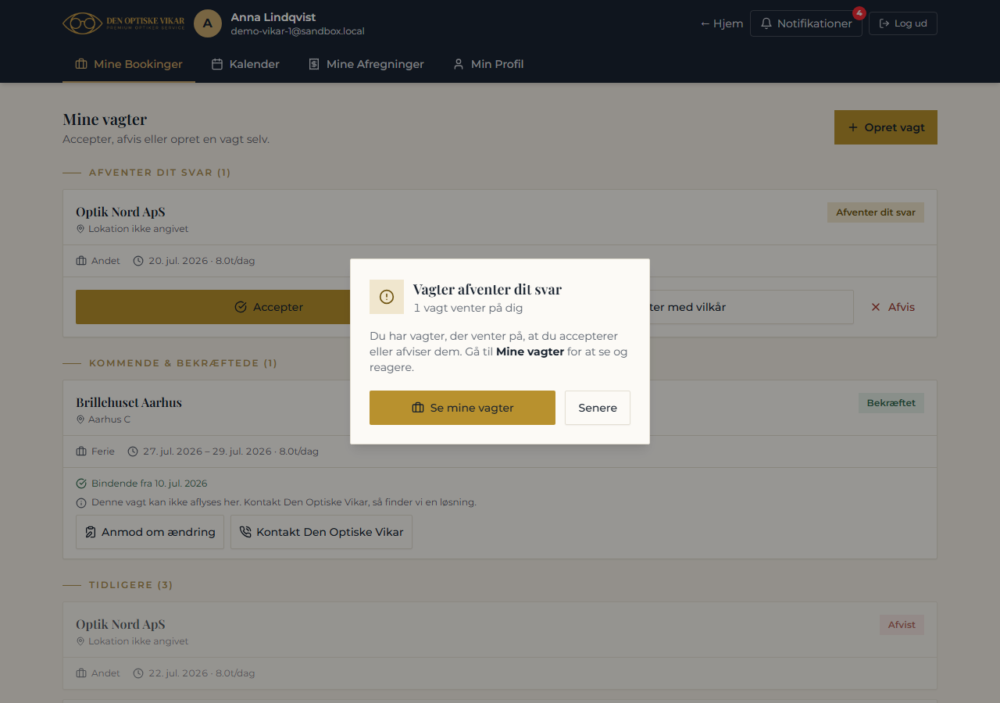
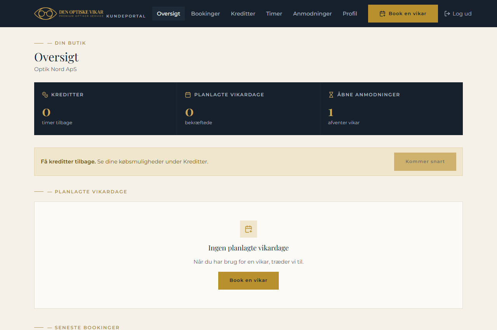
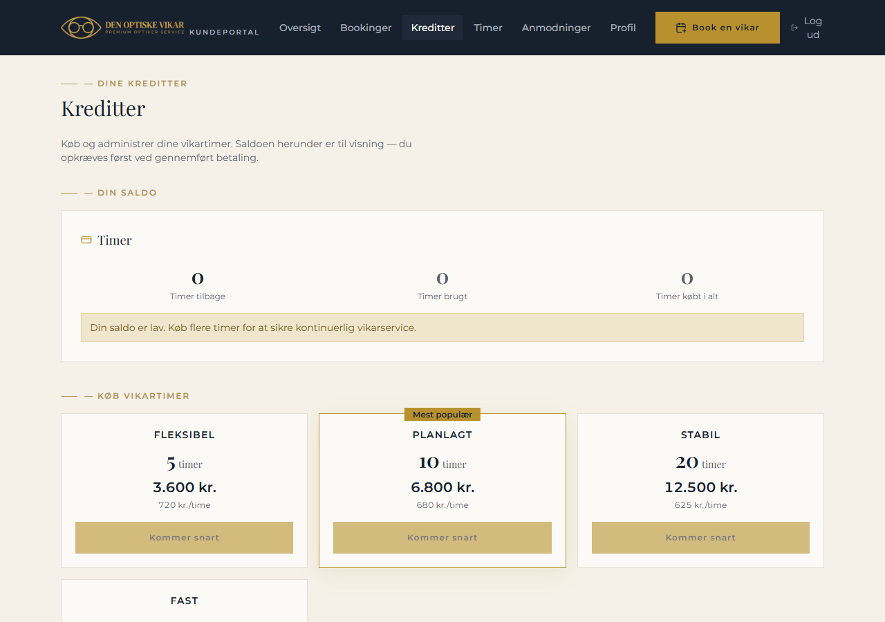
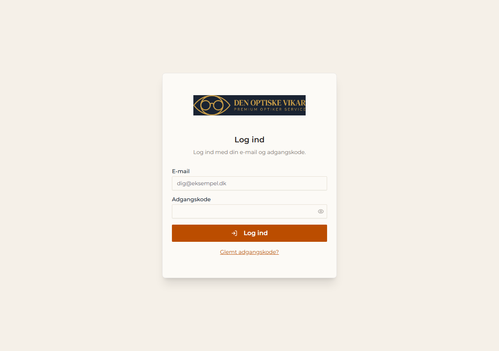

Den Optiske Vikar — UI after logo + cleanup
Staging build 5b06940 · captured 2026-07-12 · logo integrated, dead controls cleaned, payments staged, admin nav overflow fixed.
1 · Public marketing site — logo top-left, working "Log ind"

2 · Admin nav @ 1280px — fits, no overlap

3 · Admin nav collapsed (<1280px) — clean hamburger
4 · Admin — mobile — logo + badges + hamburger

5 · Vikar portal — logo top-left

6 · Store portal — "Log ud" fixed, credit CTA greyed

7 · Credits page — payments staged "Kommer snart"

8 · Login — email + password, self-hosted logo
